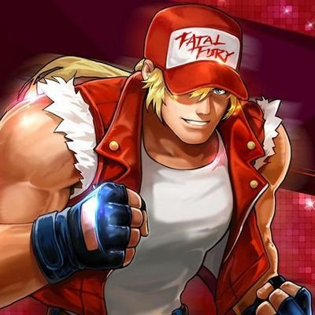

Iori Yagami25 de marzoPirokinesis, RasguñoKyo Kusanagi12 de diciembrePirokinesis

Terry Bogard15 de marzoBuster WolfBenimaru Nikaido6 de JunioElectrokinesisYamata no OrochiDesconocidoPoder divino de OrochiRugal Bernstein10 de febreroCopiar ataques